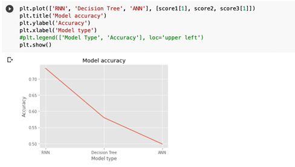

About Me
I am an eager-to-learn, adaptable, and dedicated senior year student of Computer Science with a go-getter attitude and a drive for workplace satisfaction. I am passionate about Machine Learning, Data Science and Natural Language Processing. Currently, I am looking for an opportunity at a dynamic company that will polish my skills, add towards my personal and professional growth and take my curiosity of the field to a new level.
Projects
September 24, 2021
Parts of Speech Tagging in Pashto Langauge Using Machine Learning
May 20, 2021
Comparative Analysis of Twitter Sentiments Using Deep Learning Models

This project aims to develop classifiers and compare three different models for the classification of various tweets into either positive or negative sentiments. The dataset contains an equal distribution of 5000 positive and 5000 negative sentiments for the models to be trained on. Initially we preprocessed the data heavily by primarily using the NLTK library (Natural language tool kit) and then built three models which we trained and tested the data set on.
This is a classification and a clustering task. The dataset contains different columns which can be used as features while classification. First, we preprocess the dataset because it has some categorical values. The preprocessing is done to convert these values to numerical values which are used for classification. Log scaling is done to reduce the range of some of the wide-spread values. We have built 3 ANN models by using different parameters. All the models returned an accuracy of about 99 percent. Then k-means clustering is performed to return the labels of the dataset.

GIKI Portal is a web application that provides a platform to the students of GIKI to file their complaints to the administration regarding different departments in the institute. GIKI Portal maintains the record of all the complaints filed by the students and the performed actions on these complaints. In GIKI Portal, a student can create an account, file a complaint, and can also view his/her history as well as statuses of complaints. The administration can view these complaints and forward these for action to be performed. GIKI Portal is a single efficient platform for the students to record their grievances. As the old manual method of filing complaints is time-consuming and inefficient, this system promises to be efficient, user-friendly and time friendly.

This is a Mess Management System designed for the administration and students of GIK Institute. The system is designed for better interaction between management and students. The system will reduce the human workload of both the staff and the students because the students will no longer have to go to mess to manually check-in and check-out. Also, the staff will not have to manually check the data of the students who check-in or check-out each day. It also provides a better data management than the conventional methods. Mess Management System handles all the requirements for easy Mess Management. This software will help the Mess to structuralize the activities and maintain data transparency where needed and properly store data for regular operations and future analysis.